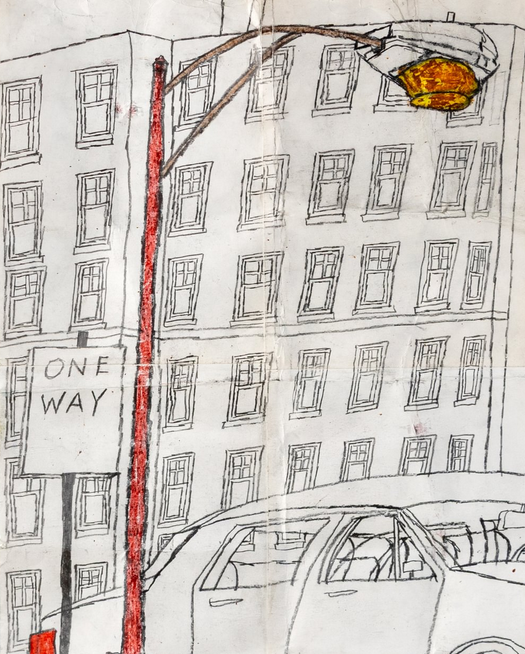

Impressions of a City: Drawings by Marvin Young
Impressions of a City explores the complexities of daily life as experienced and remembered by artist Marvin Young (b. 1961), a lifelong Chicago South Side resident. He honors the memories of his childhood by portraying vibrant cityscapes filled with people and vehicles in motion using graphite, colored pencils, crayons, pens and markers. Subjects include vintage Chicago walk-ups, high-rises, city streets, taxis, classic cars, school buses and the city’s people. Many of the buildings in his childhood neighborhood were torn down as part of the Chicago Housing Authority Plan for Transformation (c. 2000). This was a city-wide initiative that aimed to replace and revitalize public housing to include more mixed income housing yet remains ongoing and ultimately left the city with significantly fewer public housing units.
Young’s drawings take on a larger-than-life scale, exaggerating size and proportions, with subtle repetitions and fantasized elements of the ordinary: a bus with too many seats, buildings stacked on top of one another or, even, a sky featuring two suns. Young’s whimsical take on the city allows us to connect with and reflect upon his remembered and reimagined experiences that blend past and present.
Young joined Arts of Life, a progressive art studio for adult artists with intellectual and developmental disabilities, in 2024.